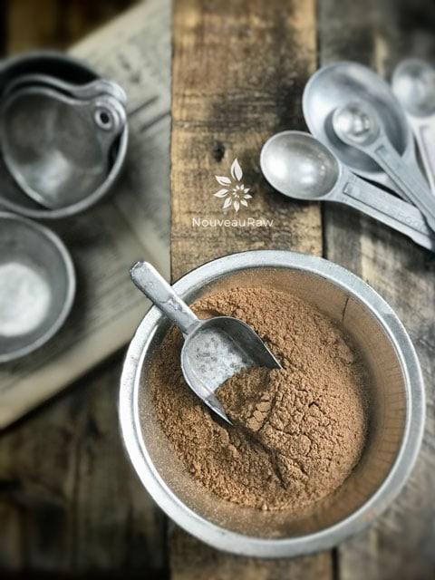

Pumpkin Spice Blend
 The sweet smell and tantalizing taste of pumpkin spice can trigger nostalgic emotional responses. Your sense of smell is connected directly to the limbic system, a network of structures located near the middle of your brain, influencing your emotions and memories.
The sweet smell and tantalizing taste of pumpkin spice can trigger nostalgic emotional responses. Your sense of smell is connected directly to the limbic system, a network of structures located near the middle of your brain, influencing your emotions and memories.
If for some reason, a particular scent takes you back in time to a not-so-pleasant memory or place… rewrite that story. Create new memories that incorporate that smell. You have the power to reroute those neuropathways.
What is Pumpkin Spice?
Oddly enough, pumpkin spice mixtures don’t involve actual pumpkin. Typically it contains ground cinnamon, nutmeg, ginger, clove, and allspice mixed together. All of these spices are packed with powerful health benefits. The key is monitoring what we mix in with them. Add it to refined sugar and well, we just sort of defeated our efforts in making our foods our medicine.
Today, we are going to make our own pumpkin spice blend. It costs less than buying a big jar of something pre-made, especially if you already have most of the spices. It’s also better to make smaller batches, so you use up the blend before it starts to go stale, loses its flavor, and potency.
There are so many applications where you can use this spice blend. Spice up whipped cream, yogurt, lattes, oatmeal, cheesecakes, cookies, and even roasted fall veggies. This staple spice blend is great to have on hand during the chilly fall months, as all the spices used are warming to the belly. Below, I am sharing just a few health benefits of each spice used.
Health Benefits of Pumpkin Spice
Cinnamon:
- It can help lower cholesterol.
- The different antioxidants present in cinnamon help to reduce a multitude of symptoms and diseases because they are free-radical-scavengers.
- Cinnamon has been used as an anti-inflammatory.
- Cinnamon is a coagulant and prevents bleeding.
- Can even help manage blood sugar levels.
- Cinnamon also increases the blood circulation in the uterus and advances tissue regeneration.
- (source)

Ginger:
- Ginger is a natural remedy for nausea and other forms of upset stomachs.
- It can also be used to help improve the absorption of essential nutrients in the body.
- Ginger is also often used as an anti-inflammatory agent.
- Ginger can actually help the stomach release its contents into the small intestines in people with dyspepsia — a condition in which 40 percent of patients suffer from abnormally delayed gastric emptying. This is one reason why ginger helps people who are bloated, constipated, and have other gastrointestinal disorders. It relaxes the smooth muscle in your gut lining and helps food move along throughout the system. (source)
Nutmeg:
- Nutmeg is a great herb to use if you suffer from sleep issues, such as insomnia, as it has been shown to promote better sleep.
- Nutmeg can also help with digestion.
- Did you know that nutmeg grows on an evergreen tree? When the fruit of a nutmeg tree ripens, it splits in half, revealing a bright red, netlike structure wrapped around a dark, brittle shell. Inside the shell is the nutmeg seed. The seeds are removed from the fruit and dried in the sun for herbal remedies. (source)
- In traditional Chinese medicine, nutmeg is associated with the Spleen, Stomach, and Large Intestine meridians, and has pungent and warm properties. Its functions are to warm the spleen and stomach, promote the circulation of qi, and stop diarrhea.
Allspice:
- It is often used to treat and prevent growing infection.
- The active principles in the allspice may increase the motility of the gastrointestinal tract. They also aid in digestion by facilitating enzyme secretions inside the stomach and intestines.
- It can also help relieve colds, chills, bronchitis, and even depression due to its antioxidant properties. In certain cases, allspice can act as a mild pain reliever.
- Allspice has a pungent edge that plays very nicely with pumpkin.
- This spice is a dried “unripe” fruit obtained from an evergreen tropical shrub belonging to the Myrtle (Myrtaceae) family.
- Unripe green berries picked up from the tree when they reach full size. They are then thoroughly subjected to dry under sunlight. Thus shriveled berries appear similar to that of brown peppercorns, and measure about 6 mm in diameter. Unlike peppercorns which have only one centrally placed seed, allspice contains two seeds. Ground allspice features a sharp spicy bite and aroma that closely resemble a mixture of black pepper, nutmeg, cloves, and cinnamon. (source)
Cloves:
- Cloves improve digestion by stimulating the secretion of digestive enzymes.
- Cloves are also good for reducing flatulence, gastric irritability, dyspepsia, and nausea.
- Cloves have been tested for their antibacterial properties against a number of human pathogens.
- Cloves contain high amounts of antioxidants, which are ideal for protecting the organs from the effects of free radicals, especially the liver. (source)
Ingredients:
- 3 Tbsp ground Ceylon cinnamon
- 2 tsp ground ginger
- 2 tsp ground nutmeg
- 1 1/2 tsp ground Allspice
- 1 1/2 tsp ground cloves
Preparation:
- Place in a small mason jar, tighten the lid, and shake.
- Store in an airtight container for up to 3-6 months.
- Be sure to keep the spices in a cool space, away from any heat source.
- Never shake spices out of the container over food that is being heated. Moisture from the food can contaminate the spice.
- When you open the jar, the aroma should waft up to greet your nasal passages. If you have to stick your nose in the container to smell the spice, it is past its prime.
© AmieSue.com